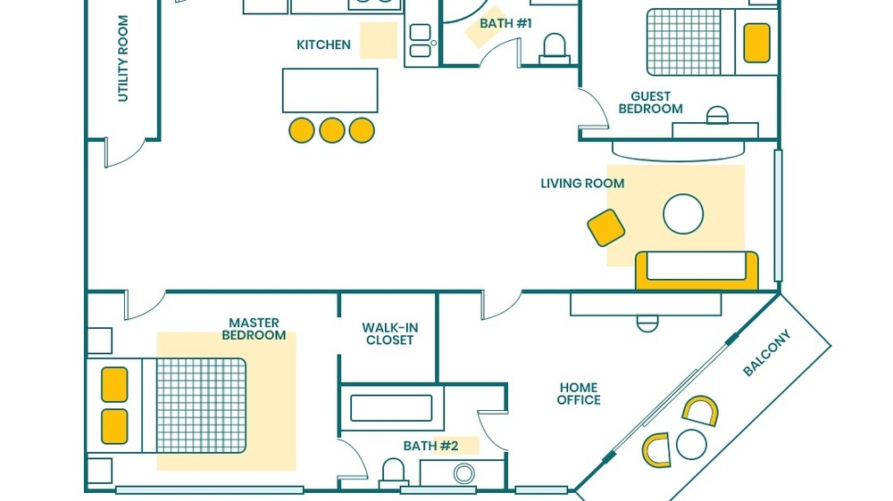

Meet Abdullah Koyuncu, a 30-year-old fullstack developer
based in Germany, whose passion for technology and coding
is propelling him to new heights in the software development
industry. With a solid background in both frontend and
backend technologies, Abdullah has become a sought-after
expert, working on cutting-edge projects that blend seamless user
experiences with robust backend solutions.
After relocating to Germany, he immersed himself in the world of
web development, quickly mastering multiple programming
languages and frameworks. His deep understanding of how front-end
design and back-end systems interact allows him to create
innovative web applications that deliver outstanding
performance. Abdullah is not only dedicated to his personal projects
but also actively mentors up-and-coming developers, sharing his
knowledge at local meetups and coding workshops. .
His journey from an aspiring developer to a key player in the tech
scene is a true testament to his determination and love for the
craft

Can You Build Your Own Smart Home System From Scratch?
Building a smart home system from scratch? Sounds like a perfect
way to reinvent the wheel. But here we are, with someone who isn't
satisfied with off-the-shelf smart home solutions. Instead, they
decide to create their own home automation setup—one that will
likely never scale beyond their living room. The system features a
custom-built interface, where lights are dimmed with a simple
voice command, but sometimes not without a few glitches. It
includes an array of smart devices, some of which work as intended
while others remain perpetually "disconnected." It's a hobby
project with no real-world application, but a fantastic
opportunity to dive into home automation protocols, APIs, and
cloud services. You'll spend hours figuring out why your
thermostat doesn’t sync properly with your phone, and yet the
thrill of seeing a set of curtains open with a tap or voice
command makes it all worth it. At the end of the day, it’s less
about functionality and more about the joy of building something
that only you can control—literally and figuratively.
The Perfect Stack
Every developer loves a good stack. It’s impossible to work without
one, so here are 15 frameworks, all served with a side of React.
Keep an eye out for the hidden gem — the framework logo changes
based on the library you select.
Code in Action: A Developer’s Journey
A salute to the relentless world of software development, this is a
developer-focused magazine! Highly recommended, because it took 50
hours of coding, debugging, and testing—proof that serious passion
has gone into this. Whether you're a fullstack developer or just
getting started, this issue dives deep into the tools, frameworks,
and latest trends shaping the tech landscape today.
Embrace modularity, not complexity
Dive into a comprehensive UI toolkit and various design patterns for
building scalable apps in the Design System library.
Inspired by the Component-Driven Development methodology,
this 10-component collection features a login page layout, a dynamic
user profile dashboard, and what a developer on GitHub calls a
'button state experiment'. Each component comes with six (yes, six)
customizable themes, including the ultra-popular dark mode.
CSS Grid Features
CSS Grid just got even better with eight new layout properties that
you can use to create even more complex designs with ease. Can you
use these on your site and still maintain performance? Probably, if
you're careful with your structure and media queries. But you
won't believe how much easier it is to manage responsive
layouts now—especially with the new 'gap' feature for spacing!